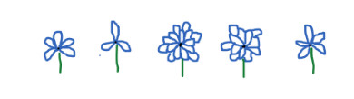
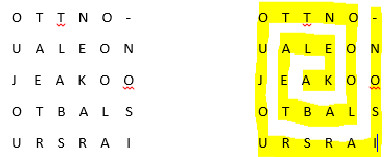

Regardez les différentes techniques en affichant la branche qui vous intéresse avec le menu de gauche.
Codes pour la branche bleue
Il existe beaucoup de codes secrets qui peuvent être utilisés pour communiquer. Comme tu sais, un code secret sert à écrire quelque chose à quelqu’un sans que tout le monde puisse savoir le message. Il faut savoir la clé de code, ‘’le truc’’, pour trouver ce qui est écrit. Voici certains exemples de codes que tu connais peut-être.
Code marguerite:
Comme tu le sais, il y a 26 lettres dans l’alphabet. Pour bien écrire le code marguerite, tu devras savoir à quelle position se trouve la lettre que tu veux écrire. Si ta lettre est la 5e dans l’alphabet, ta fleur aura 5 pétales. Si c’est la 26e lettre de l’alphabet, ta fleur aura 26 pétales.
Exemple : École

E= 5 pétales (a, b, c, d, e) C=3 pétales (a, b, c) O=15 pétales (a, b, …) L= 12 pétales E= 5 pétales
Petit truc : tu peux compter les lettres au fur et à mesure que tu les écrits en faisant l’alphabet dans ta tête.
Codes pour la branche jaune
Il existe beaucoup de codes secrets qui peuvent être utilisés pour communiquer. Comme tu sais, un code secret sert à écrire quelque chose à quelqu’un sans que tout le monde puisse savoir le message. Il faut savoir la clé de code, ‘’le truc’’, pour trouver ce qui est écrit. Voici certains exemples de codes que tu connais peut-être.
Code escargot :
Pour le code escargot, il suffit de partir la lecture du message au milieu du carré formé et de lire en tournant, comme le motif sur la coquille d’un escargot.
Exemple : Akéla et Baloo ont toujours raison.

Code alphabétique-numérique:
Il arrive aussi que l’on associe à chacun des lettres un symbole ou un numéro pour rendre le code plus difficile. Dans les cas les plus simples, on ne remplace que les voyelles par des chiffres de 1 à 6.
Exemple :
AKÉLA EST LE CHEF DE LA MEUTE.
1K2L1 2ST L2 CH2F D2 L1 M25T2.
On peut aussi numéroter les lettres de 1 à 26 pour ensuite écrire un message en n’utilisant que ces nombres. Il faudra donc que la personne qui reçoit le message écrire la clé de code complète pour s’aider à décoder.
Exemple :
A= 1 B=2 C=3 D=4 E=5 F=6 G=7 etc.
AKÉLA EST LE CHEF DE LA MEUTE.
1/11/5/12/1 5/19/20 12/5 3/8/5/6 4/5 12/1 13/5/21/20/5.
Code alphabétique à l’envers :
Il est fréquent que les codes mélangent les lettres pour nuire à notre compréhension. Ainsi, au lieu de mettre les lettres dans un ordre connu, le code ‘’à l’envers’’ inverse les lettre dans l’alphabet.
Exemple :
A=Z B=Y C=X D=W E=V F=U G=T H=S I=R J=Q K=P L=O M=N
AKÉLA EST LE CHEF DE LA MEUTE.
ZPVOZ VHG OV XSVU WV OZ NVFGV.
Codes pour les branches vertes et rouge
Il existe beaucoup de codes secrets qui peuvent être utilisés pour communiquer. Comme tu sais, un code secret sert à écrire quelque chose à quelqu’un sans que tout le monde puisse savoir le message. Il faut savoir la clé de code, pour trouver ce qui est écrit. Voici certains exemples de codes que tu connais peut-être. Je t’invite à aller voir les codes des autres branches, car c’est quand on ignore les clés de codes que l’on est le plus vulnérable, même pour les codes les plus faciles!
Code alphabétique-numérique:
Il arrive aussi que l’on associe à chacun des lettres un symbole ou un numéro pour rendre le code plus difficile. Dans les cas les plus simples, on ne remplace que les voyelles par des chiffres de 1 à 6. On peut aussi numéroter les lettres de 1 à 26 pour ensuite écrire un message en n’utilisant que ces nombres. Il faudra donc que la personne qui reçoit le message écrire la clé de code complète pour s’aider à décoder.
Exemple :
A= 1 B=2 C=3 D=4 E=5 F=6 G=7 etc.
LE SCOUT RESPECTE LA NATURE.
12/5 19/3/15/21/20 18/5/19/16/5/3/20/5 12/1 14/1/20/21/18/5.
Code alphabétique à l’envers :
Il est fréquent que les codes mélangent les lettres pour nuire à notre compréhension. Ainsi, au lieu de mettre les lettres dans un ordre connu, le code ‘’à l’envers’’ inverse les lettre dans l’alphabet.
Exemple :
A=Z B=Y C=X D=W E=V F=U G=T H=S I=R J=Q K=P L=O M=N
LE SCOUT RESPECTE LA NATURE.
OV HXLFG IVHKVXGV OZ MZGFIV.
Code escalier :
Ce qui est moins fréquent en code, c’est quand la règle de décodage est une règle de régularité qui varie. C’est le cas pour le code escalier. Dans ce code, chaque lettre est codée différemment. La première lettre du mot est la lettre du mot d’origine plus une lettre. La seconde lettre du mot est la lettre du mot d’origine plus deux lettres. La troisième lettre du mot est la lettre du mot d’origine plus trois lettres. Et cela continue jusqu’à ce que le mot soit terminé.
Exemple : ROUTIER = SQXXNKY
R + 1= S
O + 2 = Q
U + 3 = X
T + 4 = X
I + 5 = N
E + 6 = K
R + 7 = Y